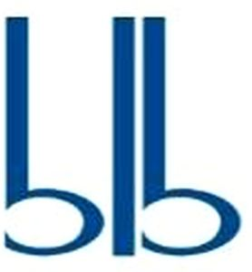

Trade Mark Journal No.2025/010 7 March 2025
WO0000001840051 (7,9,12)
Office of origin: European Union Intellectual Property Office (EUIPO)
Date of International Registration:8 November 2024
Date of designation in the UK:
8 November 2024

The mark contains the colour blue Pantone 2935 U.
International priority date claimed: 8 May 2024
(European Union Intellectual Property Office (EUIPO))
(019024479)
- Class 7
- Hydraulic actuators; actuators for valves; hydraulic valve actuators; hydraulic linear actuators; electro-hydraulic actuators; hydraulic actuators; actuators for valves; hydraulic valve actuators; electronic actuators; electrical drives for machines; distributors for vehicle engines; hydraulic distributors; hydraulic distributors, for use in relation to the following goods: motors and engines for vehicles; hydraulic distributors, for use in relation to the following goods: machines; modular hydraulic distributors; modular hydraulic distributors, for use in relation to the following goods: motors and engines for vehicles; modular hydraulic distributors, for use in relation to the following goods: machines; drive mechanisms; electrohydraulic actuating mechanisms; electrohydraulic actuating mechanisms, for use in relation to the following goods: motors and engines for vehicles; electrohydraulic actuating mechanisms, for use in relation to the following goods: machines; hydraulic lifting gear; hydraulic lifting gear, for use in relation to the following goods: machines; clack valves [parts of machines]; valves [parts of machines]; valves, for use in relation to the following goods: hydraulic distributors; hydraulic valves [parts of machines]; electrohydraulically powered valves; mechanical and hydraulic lifts; hydraulic jacks; hydraulic lifts; valves [mechanical] for regulating fluid flow; hydraulic controls for motors; hydraulic controls for machines; hydraulic controls for machines, motors and engines; electrohydraulic controls; electrohydraulic controls, for use in relation to the following goods: engines and motors; electrohydraulic controls, for use in relation to the following goods: machines; hydraulic control mechanisms; drives for elevators; driving devices for machines; spools (parts of machines); joints for tubes (metal -) [parts of engines]; governors; regulators [parts of machines].
- Class 9
- Electrical controls; control valves for regulating the flow of gases and liquids [solenoid valves]; electrical controls, for use in relation to the following goods: distribution systems; valves (electric controls for automatically operating -); control units for regulating start-up electrical motors; flow regulators.
- Class 12
- Vehicle joysticks; joysticks, for use in relation to the following goods: vehicles for use on land; joysticks, for use in relation to the following goods: forestry vehicles; joysticks, for use in relation to the following goods: forest cranes; joysticks, for use in relation to the following goods: agricultural vehicles; joysticks, for use in relation to the following goods: vehicles for grass maintenance; joysticks, for use in relation to the following goods: edgers; joysticks, for use in relation to the following goods: construction and earth moving vehicles; joysticks, for use in relation to the following goods: frontal blades; joysticks, for use in relation to the following goods: aerial lifts; joysticks, for use in relation to the following goods: harvesting machines; joysticks, for use in relation to the following goods: roadside assistance vehicles; joysticks, for use in relation to the following goods: industrial loaders; joysticks, for use in relation to the following goods: hydraulic solenoid valves; joysticks, for use in relation to the following goods: hydraulic solenoid valves for land vehicles; joysticks, for use in relation to the following goods: hydraulic solenoid valves for forest vehicles; joysticks, for use in relation to the following goods: hydraulic solenoid valves for vehicles for green maintenance; joysticks, for use in relation to the following goods: hydraulic solenoid valves for construction and earthmoving vehicles; joysticks, for use in relation to the following goods: hydraulic solenoid valves for aerial platforms; joysticks, for use in relation to the following goods: hydraulic solenoid valves for harvesting machines; joysticks, for use in relation to the following goods: hydraulic solenoid valves for road assistance vehicles; joysticks, for use in relation to the following goods: hydraulic solenoid valves for industrial loading vehicles; motors, electric, for land vehicles.
BLB S.r.l.
Representative: Autuori & Partners S.r.l., Strada del Megiaro, 261, I-36100 Vicenza, ITALY